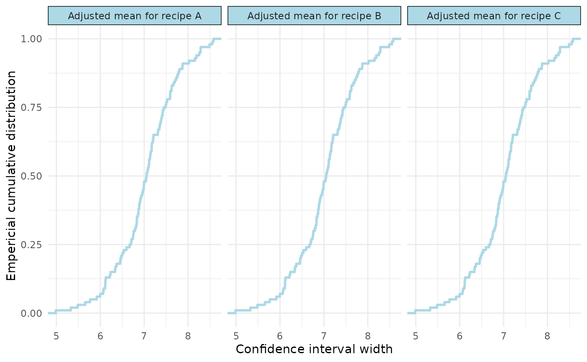

Custom estimand functions: means and contrasts
Source:vignettes/estimand-functions.Rmd
estimand-functions.RmdCreate a model
We’ll use the sleepstudy data from the lme4 package, and
create a very simple model. In practice, this could be pilot data or
from another (related) study.
Marginal means
In the first instance, we demonstrate a function that estimates the
marginal means and 95%CI using the emmeans package.
The package expects a function that takes the lme4 model as an input, and produces a data.frame with columns for ‘estimand’, ‘estimate’, ‘lower’, and ‘upper’. Here, we just do so for the beta coefficient for ‘Task’:
#marginal means function
recipe_means <- function(fitted_model) {
marginal_means <- emmeans::emmeans(fitted_model, specs = ~ recipe)
ci <- as.data.frame(stats::confint(marginal_means, level = 0.95))
data.frame(
estimand = paste("Adjusted mean for recipe", ci$recipe),
estimate = ci$emmean,
lower = ci$lower.CL,
upper = ci$upper.CL
)
}We can quickly test this function as follows:
recipe_means(model_cake)
#> estimand estimate lower upper
#> 1 Adjusted mean for recipe A 33.12222 29.61715 36.62729
#> 2 Adjusted mean for recipe B 31.64444 28.13937 35.14952
#> 3 Adjusted mean for recipe C 31.60000 28.09493 35.10507Run the simulations
As usual, we’ll run 100 simulations for simplicity and efficiency, but for the real thing, do more (e.g., 5000).
#run precision simulation
sim1 <- precisionSim(
fit = model_cake,
interval_fun = recipe_means,
target_width = c(5, 7, 9),
nsim = 100,
seed = 123
)
#> Registered S3 method overwritten by 'car':
#> method from
#> na.action.merMod lme4
#summary
summary(sim1)
#> Precision analysis by simulation
#> ===============================
#>
#> Model: angle ~ recipe + temp + (1 | recipe:replicate)
#> Simulations requested: 100
#> Target probability: 80 %
#> Monte Carlo confidence level: 95 %
#>
#> Estimand Width Assurance Monte Carlo CI
#> Adjusted mean for recipe A 5 1% 0.03%, 5.45%
#> Adjusted mean for recipe A 7 48% 37.9%, 58.22%
#> Adjusted mean for recipe A 9 100% 96.38%, 100%
#> Adjusted mean for recipe B 5 1% 0.03%, 5.45%
#> Adjusted mean for recipe B 7 48% 37.9%, 58.22%
#> Adjusted mean for recipe B 9 100% 96.38%, 100%
#> Adjusted mean for recipe C 5 1% 0.03%, 5.45%
#> Adjusted mean for recipe C 7 48% 37.9%, 58.22%
#> Adjusted mean for recipe C 9 100% 96.38%, 100%
#>
#> Diagnostics:
#> Failed fits: 0
#> Non-converged fits: 0
#> Singular fits: 0
#> Interval failures: 0
#>
#> Elapsed time: 8.535Visualise
We can visualise our results in two ways: 1) “assurance” which should a ecdf, and 2) “distribution” which shows a histogram of the simulated widths.
#visualise
plot(sim1, type="assurance")
Pairwise contrast
Now we’ll demonstrate pairwise contrasts, again using the
emmeans package.
#pairwise contrast function
recipe_pairwise <- function(fitted_model) {
comparisons <- emmeans::emmeans(fitted_model, pairwise ~ recipe,adjust = "none")
ci <- as.data.frame(stats::confint(comparisons$contrasts,level = 0.95,adjust = "none"))
data.frame(
estimand = ci$contrast,
estimate = ci$estimate,
lower = ci$lower.CL,
upper = ci$upper.CL
)
}
#test
recipe_pairwise(model_cake)
#> estimand estimate lower upper
#> 1 A - B 1.47777778 -3.479142 6.434698
#> 2 A - C 1.52222222 -3.434698 6.479142
#> 3 B - C 0.04444444 -4.912475 5.001364Run the simulations
#run precision simulation
sim2 <- precisionSim(
fit = model_cake,
interval_fun = recipe_pairwise,
target_width = c(7, 9, 11),
nsim = 100,
seed = 123
)
#summary
summary(sim2)
#> Precision analysis by simulation
#> ===============================
#>
#> Model: angle ~ recipe + temp + (1 | recipe:replicate)
#> Simulations requested: 100
#> Target probability: 80 %
#> Monte Carlo confidence level: 95 %
#>
#> Estimand Width Assurance Monte Carlo CI
#> A - B 7 0% 0%, 3.62%
#> A - B 9 17% 10.23%, 25.82%
#> A - B 11 87% 78.8%, 92.89%
#> A - C 7 0% 0%, 3.62%
#> A - C 9 17% 10.23%, 25.82%
#> A - C 11 87% 78.8%, 92.89%
#> B - C 7 0% 0%, 3.62%
#> B - C 9 17% 10.23%, 25.82%
#> B - C 11 87% 78.8%, 92.89%
#>
#> Diagnostics:
#> Failed fits: 0
#> Non-converged fits: 0
#> Singular fits: 0
#> Interval failures: 0
#>
#> Elapsed time: 8.655Adjusting for covariates
In some instances, we may want our estimands to adjust for a covariate. Here is an example function for an adjusted marginal mean.
recipe_means_at_200 <- function(fitted_model) {
marginal_means <- emmeans::emmeans(fitted_model,specs = ~ recipe,at = list(temp = 200 ))
ci <- as.data.frame(stats::confint(marginal_means,level = 0.95))
data.frame(
estimand = paste("Recipe", ci$recipe, "mean at 200"),
estimate = ci$emmean,
lower = ci$lower.CL,
upper = ci$upper.CL
)
}
#test
recipe_means_at_200(model_cake)
#> estimand estimate lower upper
#> 1 Recipe A mean at 200 33.12222 29.61715 36.62729
#> 2 Recipe B mean at 200 31.64444 28.13937 35.14952
#> 3 Recipe C mean at 200 31.60000 28.09493 35.10507The same could be done for pairwise contrasts or interaction models.